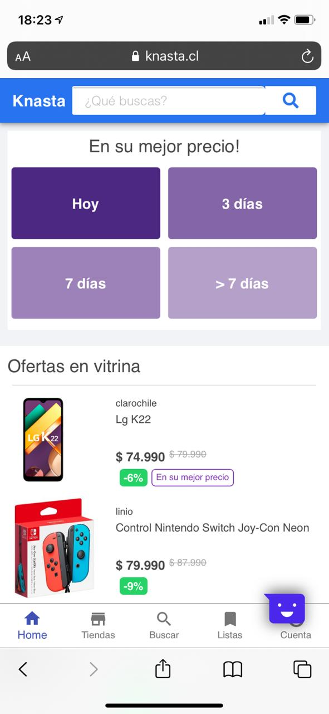
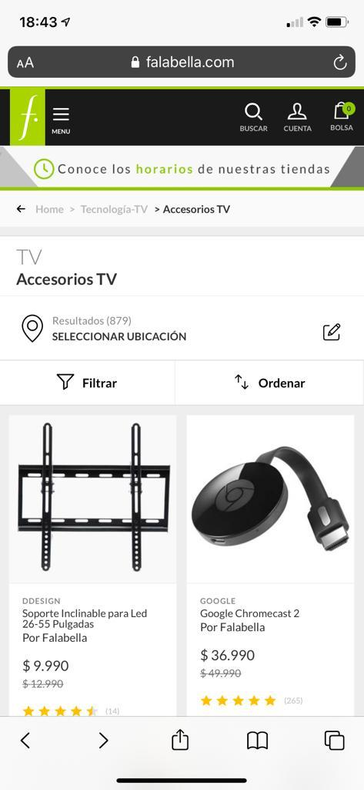

PARC: Repetition
Netflix
Netflix.comThis site shows a very good example of repetition. every section of the information is presented in the same format, structure and design. I like it
PARC: Contrast
Knasta
knasta.cl

The Contrast principle is very well used in this website because it helps the user decide in a easy way the differents options presented.
White Space
Falabella
falabella.com

Clear and white space is very well used in this website. This site needs to deliver a lot of information, but the way that they present it help the user to decide during the purchase process.